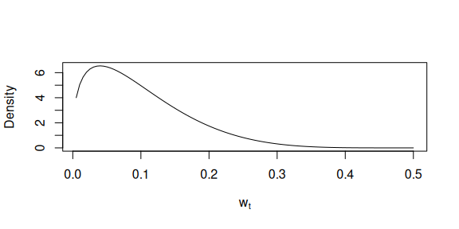
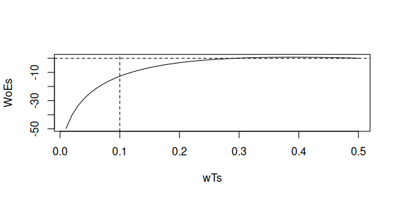
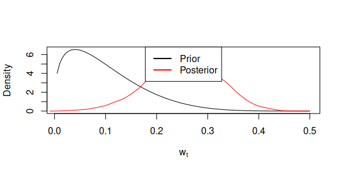
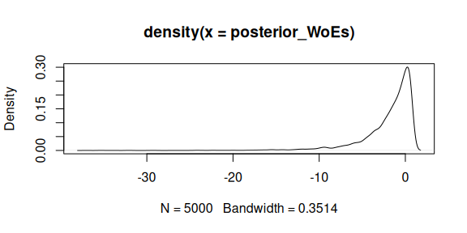

Posterior likelihood ratio distributions
Source:vignettes/posterior-LR-distributions.Rmd
posterior-LR-distributions.Rmd
library(wgsLR)
#> Loading required package: pracma
#> Loading required package: DEoptim
#> Loading required package: parallel
#>
#> DEoptim package
#> Differential Evolution algorithm in R
#> Authors: D. Ardia, K. Mullen, B. Peterson and J. UlrichThe following is based on Section 3 in Meester and Slooten (2021).
Assuming everything except trace sample error rate, , is known (i.e. reference sample error rate and genotype probabilities , , and ), then
Assuming in the rest of this document that the prior of under and coincide such that then
where
Thus,
So if we can sample from and calculate the ’s as if was known, we get the posterior likelihood ratio distribution under .
There are some interesting points in Meester and Slooten (2021) that are quoted below. Quotation marks were not used as was replaced by and by and points about the posterior likelihood ratio distribution under was removed:
Thus, sampling from the posterior likelihood ratio distribution under tells us what likelihood ratios we expect to obtain if we can eliminate our uncertainty about , but we do not expect the likelihood ratio to change in either direction.
When we repeatedly sample using , we can, by disregarding the, say, 5% most extreme outcomes, construct an interval. This interval tells us something about the values of future likelihood ratios that we would obtain, were we to remove all existing uncertainty about the model parameters .
Example
set.seed(2026)
m <- 100
q <- runif(m, min = 0.2, max = 0.8)
p <- lapply(q, \(q0) c(q0^2, 2*q0*(1-q0), (1-q0)^2))
wR <- 1/100
cases <- sample_data_Ha_wTwR(n = m, wT = 1/10, wR = wR, p = p)
xT <- cases$xT[, 1L]
xR <- cases$xR[, 1L]
table(xT, xR)
#> xR
#> xT 0 1 2
#> 0 11 17 1
#> 1 20 28 7
#> 2 4 9 3We can calculate ’s, or rather :
WoE_full_knowledge <- calc_LRs_wTwR(
xT = xT,
xR = xR,
wR = wR,
wT = 1/10,
p = p
) |>
log10() |>
sum()
WoE_full_knowledge
#> [1] -12.75511
shps <- get_beta_parameters(mu = 1/10, sigmasq = (1/10)^2/2)
shps
#> [1] 1.4 5.6
qbeta05(c(0.025, 0.975), shape1 = shps[1], shape2 = shps[2])
#> [1] 0.007436954 0.269891865
prior_x <- seq(0, 0.5, length.out = 100)[-1]
prior_y <- dbeta05(prior_x, shape1 = shps[1], shape2 = shps[2])
plot(prior_y ~ prior_x, type = "l", xlab = expression(w[t]), ylab = "Density")
WoE_marginalisation <- calc_WoE_wTwR_integrate_wT_mc(
xT = xT,
xR = xR,
wR = wR,
p = p,
shape1T_Hp = shps[1],
shape2T_Hp = shps[2],
shape1T_Ha = shps[1],
shape2T_Ha = shps[2]
)
WoE_marginalisation
#> [1] 0.1494583
wTs <- seq(1/100, 1/2, length.out = 50)
WoEs <- lapply(wTs, \(wT) {
calc_LRs_wTwR(
xT = xT,
xR = xR,
wR = wR,
wT = wT,
p = p
) |>
log10() |>
sum()
}) |> unlist()
plot(wTs, WoEs, type = "l")
abline(h = 0, lty = 2)
abline(v = 1/10, lty = 2)
m <- wT_posterior_Ha_stan(xT = xT, xR = xR, wR = wR, p = p,
prior_a = shps[1],
prior_b = shps[2],
chains = 5,
parallel_chains = 5,
iter_warmup = 100,
iter_sampling = 1000)
wT_Ha_E <- m$draws("wT") |> c()
plot(prior_y ~ prior_x, type = "l", xlab = expression(w[t]), ylab = "Density")
lines(density(wT_Ha_E), col = "red")
legend("topright", c("Prior", "Posterior"), col = c("black", "red"), lty = 1, lwd = 2)
posterior_WoEs <- lapply(wT_Ha_E, \(wT) {
calc_LRs_wTwR(
xT = xT,
xR = xR,
wR = wR,
wT = wT,
p = p
) |>
log10() |>
sum()
}) |> unlist()
mean(10^posterior_WoEs)
#> [1] 0.8950831
10^WoE_marginalisation
#> [1] 1.410777Transformation of interval endpoints with monotone increasing transformation okay